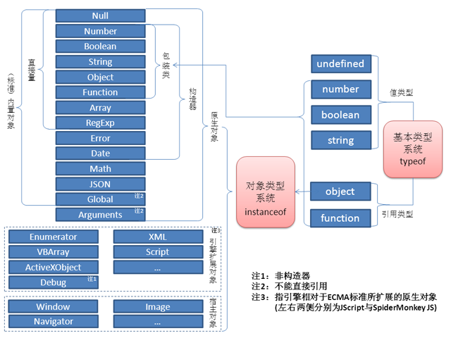

这个图来自于《JavaScript语言精髓与编程实践》第三章P184页。最近在改第二版，这张图重做了，需要的可以对照着看。关注这个体系的朋友可以参考如下：
再谈JavaScript的数据类型问题
http://blog.csdn.net/aimingoo/article/details/6634977
三谈类型问题：ECMAScript为什么错了？
http://blog.csdn.net/aimingoo/article/details/6636961
此外，补充一下图中用到的概念：
1、内置（Build-in）对象与原生（Naitve）对象的区别在于：前者总是在引擎初始化阶段就被创建好的对象，是后者的一个子集；而后者包括了一些在运行过程中动态创建的对象。
2、引擎扩展对象是一个并不太大的集合，一般来说比较确定，它们也属于引擎的原生对象（但不属于ECMA规范的原生对象）。
3、宿主对象不是引擎的原生对象，而是由宿主框架通过某种机制注册到JavaScript引擎中的对象。
4、一些宿主会把自己提供的对象／构造器也称为“原生对象”，例如Internet Explorer 7就把它提供的XMLHttpRequest()称为原生的——与此相对的是在它的更早先版本中通过“new ActiveXObject('Microsoft.XMLHTTP')”这样的方法创建的对象。这种情况下，读者应注意到“宿主的原生对象”与“引擎的原生对象”之间的差异。